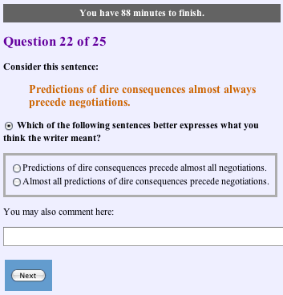
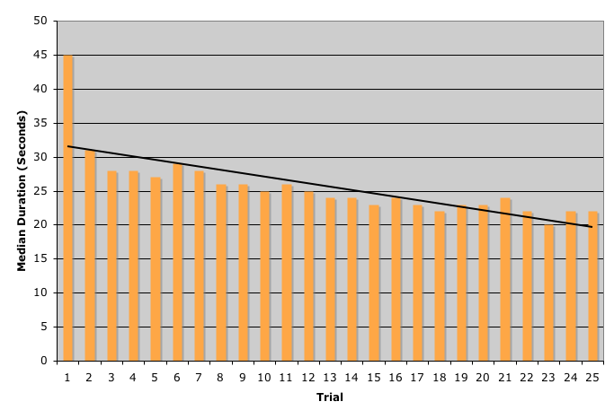
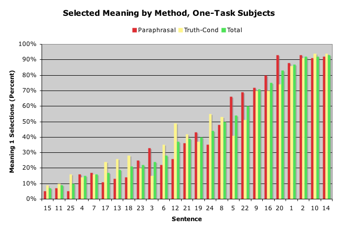
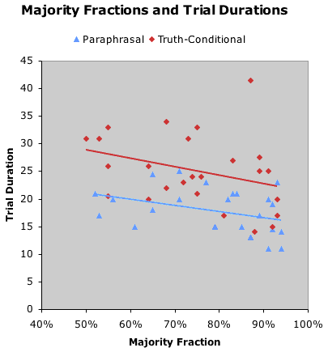

Turing Center
University of Washington
Seattle, Washington, U.S.A.
http://www.turing.washington.edu
Utilika Foundation
http://utilika.org
Revised 6 May 2007
Also available: pilot-study version.
The Semantic Web vision requires authors to make content unambiguous, but whether they can, want to, and should do so has been questioned. To address these issues, we conducted an experiment in which 386 subjects, some minimally paid and some volunteers, used two methods--paraphrases and truth-conditional examples--to disambiguate sentences that exhibited syntactically ambiguous quantification. The results varied greatly from sentence to sentence. The paraphrasal method was mostly superior to the truth-conditional method, and volunteers outperformed paid subjects in intra-subject consistency and inter-subject agreement. Disambiguation typically took about 20 seconds per sentence (a fraction of the time required for sentence translation), and the speed improved with experience. Subjects generally found both methods satisfying and were able to achieve substantial consistency and agreement.
H.1.2 User/Machine Systems--Human factors, human information processing
H.5.2 User Interfaces--Natural language
I.2.4 Knowledge Representation Formalisms and Methods--Semantic networks
I.2.6 Learning--Knowledge acquisition
I.7.2 Documentation Preparation--Markup languages
J.5 Arts and Humanities--Linguistics
Economics, Experimentation, Human Factors, Languages
Ambiguity, Annotation, Disambiguation, Distributed Human Computation, Metadata, Semantic Web
Ambiguity and vagueness pervade natural-language corpora, including the unstructured Web. An authoritative Web-based health encyclopedia advises, "Avoid prolonged exposure to excessive heat and humidity" (United States National Library of Medicine and National Institutes of Health 2007). How long is "prolonged"? How much is "excessive"? Are heat and humidity independently or only jointly hazardous?
The Semantic Web Initiative proposes to deal with ambiguity by relying on human disambiguation: Humans will represent meanings unambiguously (or annotate them with unambiguous metadata), by reference to concepts in decentralized ontologies, so that machines can use the Web's content to answer questions and take beneficial actions (Berners-Lee et al. 2001, Noy and McGuinness 2001). This proposal builds on a long history of strategies for human disambiguation, including disciplined writing (O'Conner 1996, Berry et al. 2003), formal knowledge representation languages (Maat 1999, Pietroski 2007, Zalta 2005), controlled natural languages (Pool 2006, Nyberg et al. 2003, Fuchs et al. 2006, Schwitter 2005), interactive disambiguation (Blanchon 1997, Bernth 2006, Sammer et al. 2006, Boguslavsky et al. 2005), menu-driven authoring (Power 1999, Power and Evans 2004), semantic annotation support (Sereno et al. 2005), and controlled classification and annotation (Powell 2003, United States National Library of Medicine 2007).
On the other hand, there is evidence to support skepticism of the Semantic Web vision. While people are generally able and willing to resolve ambiguity in whatever they hear and read, they are less able and more reluctant to prevent ambiguity in what they express (Arnold et al. 2004, Wasow et al. 2005). Moreover, many ideas are intrinsically imprecise, and disambiguating them is impractical or misrepresents their meanings rather than clarifying them (Marshall and Shipman 2003, Shirky 2003). Some authors even have trouble creating simple metadata for their works, because of uncertainty about the meanings of terms such as "author" and "date created" (Crystal and Greenberg 2005). Because of these difficulties, some people believe that the Web’s efficacy cannot and should not rely on extensive human disambiguation. This view expects that machines will learn to understand text without even selective annotation by human consultants, let alone massive disambiguation by authors (Etzioni et al. 2007).
To best evaluate these views, we want to understand the possibilities and limits of human disambiguation. Can Web authors improve the retrieval and processing of their documents by preventing ambiguities? If so, how? Which methods work best under which conditions? How costly are disambiguation methods to learn and to use?
To the best of our knowledge, no comparative evaluation of human disambiguation methods has ever been published. Blanchon and Fais (1996) experimented with alternative styles (human-like and machine-like) and modes (written and oral) of disambiguation dialogues, finding them all roughly equal in efficacy, but did not systematically vary the disambiguation method. Greenberg et al. (2003) separately evaluated two successive versions of a tool supporting the creation of unambiguous metadata, but the analyses did not permit the comparison of individual variables. In some non-comparative tests, users have generally succeeded (Chklovski 2005, Bernstein et al 2005), but in others users have complained, evaded the task, and produced poor results (Clark et al. 2005, Kamprath et al. 1998, Sokvitne 2000, Zhang and Jastram 2006). These inconclusive findings, and research showing that problem formulation can greatly affect task performance (Cosmides and Tooby 1996), suggested to us that it would be beneficial to investigate which disambiguation methods best support users under which conditions.
We report here an experiment comparing two disambiguation methods: paraphrasal selection and truth-conditional selection. In the former, subjects chose between paraphrases; in the latter, between situation descriptions. We designed these methods to minimize the burden on subjects, intending to verify that subjects can employ easy disambiguation methods before we investigate more difficult ones. We expected the methods to be easy and intuitive because (1) subjects used an already known natural language, not a formalism; (2) subjects made choices, rather than formulating expressions; (3) all choices were binary; and (4) the methods relied on two common rhetorical practices: rephrasing and storytelling.
In order to observe whether subjects learned to disambiguate as they obtained experience, we repeatedly exposed subjects to a commonly encountered type of structural ambiguity. We chose quantification ambiguity, because it has long been a focus of semantic research and creates interpretive problems of several kinds (Bach 1995). Specifically, subjects were asked to disambiguate adverbially quantified sentences (Evans 1995), with "almost always" and "nearly always" as the main modifiers. Examples of ambiguous sentences containing such modifiers are "A dog almost always chases a car", "Our book club almost always chooses fiction", and "Acquaintances almost always commit murders".
We drew sentences in English from the Web and asked subjects to reduce the ambiguities with a paraphrasal selection, a truth-conditional selection, or both. We say "reduce" rather than "eliminate", because these ambiguities can be complex, and choosing between two alternatives may answer one question about a meaning while leaving others unresolved. Different methods may work better with different types of ambiguity and in different languages, but we leave these possibilities for future research.
The experiment was conducted on the Web, with only basic graphical-browser features required. All response processing and state management was server-based. The instrument may be tested at http://utilika.org/re/aa/. The user interface is illustrated in Figure 1.

Figure 1. User Interface
Subjects were recruited through a contracting service, Amazon Mechanical Turk (Amazon.com 2007), and through Internet discussion groups about language, writing, and editing (Yahoo groups "syntax", "semantic-web", and "technical_writers_and_editors"; the "copyediting-l" mailing list; and Google groups "sci.lang", "alt.english.usage", and "alt.usage.english"), with the intent of creating a mixture of levels of disambiguation-related skills and interests, similar to the mixture that we envision among Web content creators for the foreseeable future. The contracted subjects were paid $0.75 each; the others received no compensation. The ability to read and write English was the only participation requirement. The experiment was accessible during a four-day period, 21-25 April 2007. Of 386 subjects completing the experiment, 200 participated with pay and 186 as volunteers. Another 64 subjects quit early.
Subjects were anonymous. We implemented no measures to verify that they were human, unique, non-collusive, and attentive. About 1% of the subjects completed the experiment so rapidly (under seven seconds per item) as to make us doubt that they gave considered responses. Inspection of the data revealed no other indication of subject misconduct. Subjects gave answers on 99% of the tasks assigned to them.
As reported by the subjects on an exit questionnaire, 88% had English as a native language, 76% had United States English as their best-known English variety, and most subjects were in the 20-39 (47%) and 40-59 (41%) age ranges.
Subjects read a description of the topic of and motivation for the experiment, the terms of participation, and an orientation that described and illustrated the subjectivity of ambiguity resolution. Subjects were then told that they would be answering questions about the apparently intended meanings of sentences and that, in doing so, they could use the sentences, their knowledge, their beliefs, and their experiences.
Subjects then saw a sequence of 25 sentences, each accompanied by one or two disambiguation tasks and, after every fifth trial, a questionnaire asking how interesting, easy, and useful they felt the study was. An exit questionnaire and an acknowledgement ended the experiment. Each trial and each questionnaire included a text area for comments.
Of the 25 sentences, the adverbial phrase modifying the verb was "almost always" in 16, "nearly always" in five, and "usually", "mostly", "almost never", and "only" in one each. This mixture was primarily intended to avoid monotony, a problem identified by some subjects in a pilot study.
For each stimulus sentence, we identified two possible meanings, and for each meaning we wrote a paraphrase and a truth condition (situation description). We shall describe a paraphrase and a truth condition as equivalent if they express the same meaning.
When performing paraphrasal selection, subjects were asked "Which of the following sentences better expresses what you think the writer meant?". When performing a truth-conditional selection, they were asked "Which of the following situations better illustrates what you think the writer meant?".
Subjects were randomly assigned to four treatment groups:
0. The method alternated every five trials, with paraphrasal selection in trials 1-5, 11-15, and 21-25, and truth-conditional selection in trials 6-10 and 16-20. 120 assigned, 111 completed.
1. The method alternated every five trials, with truth-conditional selection in trials 1-5, 11-15, and 21-25, and paraphrasal selection in trials 6-10 and 16-20. 116 assigned, 101 completed.
2. The method in every trial was paraphrasal selection and truth-conditional selection, in that order on the page. 105 assigned, 90 completed.
3. The method in every trial was truth-conditional selection and paraphrasal selection, in that order on the page. 104 assigned, 84 completed.
Thus, subjects in groups 0 and 1 performed 25 selections each, and those in groups 2 and 3 performed 50 selections each.
The orders of the stimulus sentences across the 25 trials, and of the two alternative responses for each task on each trial, were random. The response randomization implies that two-task subjects might see a paraphrase and its equivalent truth condition in either the same position or the opposite positions.
Subjects expressed moderate satisfaction with the study in all conditions, exhibiting no substantial differences. On a 0-to-4 scale, the mean rating on each dimension in each condition was no less than 2.14 and no more than 2.60. Subjects tended to rate the study as easiest and most interesting when they had just performed paraphrasal-only disambiguation, and most difficult and most boring when they had just performed both tasks with the truth-conditional task on top, but the difference amounted to less than 8% of the scale in each case.
Another measure of satisfaction is completion of the experiment. Performing two tasks per trial could be expected to be more burdensome and lead to more defections than performing only one task per trial, and, indeed, the defection rate among two-task subjects was 17%, somewhat higher than the 13% rate over all (p < 0.04). We received 25 comments from subjects who quit without completing the experiment, but almost all these comments were about particular sentences' meanings, and none described any dissatisfaction with participation in the study.
If subjects learned to perform the tasks as they proceeded through the experiment, this progress was not reflected in the ratings of perceived difficulty. The mean rating on this dimension stayed between 2.2 and 2.3 throughout the 25 trials.
The choices made by a two-task subject in a trial were considered consistent if the chosen truth condition was equivalent to the chosen paraphrase. Since the alternatives' orders were randomized, subjects wanting to be consistent could not merely choose the first or the second member of each pair; they needed to examine the texts. Consistency can be seen as a measure of disambiguation quality: A subject who competently represents a disambiguated meaning does not allow a change in the method of meaning representation to change the selected meaning.
In each two-task condition, 82% of the trials were completed consistently. Thus, subjects tended to be substantially more consistent than if they had responded randomly, and the order in which the two tasks appeared on the page did not noticeably affect the consistency rate.
The regression of consistency on experience showed a mild increase, from 80% in trial 1 to 85% in trial 25, but 50% of the subjects' individual consistency regression slopes were negative.
The median time to perform a disambiguation was 20 seconds on one-task trials and 55% longer on two-task trials, as shown in Table 1. Subjects typically performed paraphrasal disambiguation about 30% faster than truth-conditional disambiguation.
Table 1. Median Trial Duration by Treatment Condition
| Task(s) Performed in Trial | ||||||
|---|---|---|---|---|---|---|
| Para | Truth | All One-Task | Para Truth | Truth Para | All Two-Task | |
| Median Duration | 17 | 24 | 20 | 30 | 31 | 31 |
| Trial Count | 2675 | 2625 | 5300 | 2250 | 2100 | 4350 |
Possible causes for the extra time needed to choose between truth-conditional alternatives include their 63% greater length, their greater complexity (e.g., having 1.2 commas per alternative, versus 0.2 in the paraphrases), and the additional reasoning they required, specifically the need for more quantitative reasoning (there was a mean of 2.9 numbers per truth condition, versus 0.2 per paraphrase). One might expect truth-conditional tasks to elicit more comments and thus take even longer, but this was not the case: Subjects commented in 6% of both paraphrasal and truth-conditional trials.
The speed of disambiguation increased with subjects' experience. A large drop in durations occurred from trial 1 (45 seconds) to trial 2 (31 seconds), followed by a more gradual decrease to about 22 seconds by the end of 25 trials, as shown in Figure 2. The figure also includes the linear regression for the 25-trial sequence. Of the 386 subjects, 81% became faster and 19% became slower over time, measured with the slope of each subject's duration-sequence regression line.

Figure 2. Median Duration by Trial
There is considerable variability in the durations not accounted for by method and experience. Among the 25 sentences, median durations of one-task paraphrasal trials ranged from 11 to 25 seconds, and those of one-task truth-conditional trials ranged from 14 to 41.5 seconds. The median durations of the two methods were intercorrelated (r = 0.62), and the truth-conditional median was larger for every sentence, but the ratios of the durations varied greatly, from 1.03:1 up to 2.28:1. We explain some of this variability below.
In addition to consistency, agreement among subjects is arguably another indicator of disambiguation quality. Subjects were asked to guess the meanings intended by authors, and, if we assume that the majority always made the correct guess, then the size of the majority is a measure of the subjects' collective success. We define a method-majority choice as the choice made by the majority of subjects (in all treatment groups) who disambiguated the same sentence with the same method in any trial. We define a consistent-majority choice as the one chosen in the majority of consistent two-task choices on the sentence. And we define a total-majority choice as the meaning chosen in the majority of cases, regardless of method or treatment condition.
Of 13,859 choices made by all subjects, 77% were method-majority choices. A linear regression on this indicator over the 25 trials is nearly horizontal (rising from 76% to 78%), showing no substantial evidence that subjects learned to reach more agreement.
Paraphrasal selection was superior to truth-conditional selection by several measures. Of all choices made paraphrasally, 79% were method-majority choices, versus 75% for truth-conditional selection. Paraphrasal selection was the better method (it had higher method-majority rates) for 223 subjects, while truth-conditional selection was better for only 116 subjects (p < 0.00000001). There were 768 trials in which two-task subjects made inconsistent choices, thus making the consistent-majority choice with one method and the opposite choice with the other method. In 61% of these trials, the paraphrasal method yielded the consistent-majority choice. As Figure 3 shows, 17 of the 25 sentences (5, 20, etc.) had paraphrasal majorities aligned with and stronger than the total majorities (p < 0.1). Among inconsistent two-task subjects, the paraphrasal method yielded the consistently correct meaning more often than did the truth-conditional method on 17 sentences, while the truth-conditional method yielded the correct choice more often on seven sentences. On one sentence the methods were tied.

Figure 3. Selected Meaning by Method among One-Task Subjects
Agreement varied greatly from one sentence to another. One-task subjects' method-majority choices ranged from a bare-majority 51% to a near-unanimous 94%. Inter-method arithmetic differences in the fractions choosing a particular meaning ranged from 1 to 25 percentage points. Facts about the world, customary language usages, and features of particular paraphrasal and truth-conditional alternatives may interact to account for these differences. We speculate, for example, that (1) the quasi-universal quantifiers "almost always" and "nearly always" tend more to produce easy-to-reject meanings than do milder quantifiers such as "usually" and "mostly", and (2) sentences with bare categorical subjects and categorical complements or modifiers (such as "dogs") tend to be more problematically ambiguous than other sentences, including those with referential subjects (such as "Fido"), because the former permit more interpretations. Five of the stimulus sentences (1, 2, 6, 7, and 10) were low in ambiguity on both these tests, and four of the five had total majorities larger than the mean of all sentences' total majorities (p < 0.3).
The sentences on which there was greatest agreement tended to be those that subjects disambiguated most rapidly. The sentences' method-majority sizes (including one- and two-task trials) were negatively correlated with their one-task trial durations (r = 0.37 for paraphrasal and r = 0.33 for truth-conditional trials). Figure 4 shows the associations and the regression lines.

Figure 4. Sentence Majority Fractions and Trial Durations
As noted in Chklovski and Mihalcea (2003), one can increase the precision of disambiguation by soliciting and combining multiple judgments. For example, while 77% of individual one-task subjects chose the method-majority meaning, 89% of all agreeing pairs of one-task subjects using the same method agreed on the method-majority meaning. Similarly, 83% of all consistent two-task choices were consistent-majority choices.
The volunteer subsample--the unpaid subjects recruited from language-related interest groups--were slightly less satisfied than paid subjects (on each measure the means were within 7% of the scale), but by three measures they performed better. First, volunteers were more consistent. Among those performing two tasks per trial, volunteers were consistent in 85% of 1,943 trials, while paid subjects were consistent in 79% of 2,351 trials. Second, volunteers reached greater agreement. Their mean method majority was 81%, versus 74% for paid subjects. And the volunteers' largest method majority was 99%, versus 92% for paid subjects. Third, volunteers offered more comments, with a mean of 3.3 comments per volunteer versus 1.2 per paid subject. While doing better, volunteers took more time: Their median trial duration (including end-of-trial commenting) was 28 seconds, compared with 23 seconds for paid subjects. The time spent on commenting only partly accounts for this difference: The median durations are 26 and 23 seconds, respectively, when trials with comments are excluded.
Our results suggest that humans can disambiguate successfully. After five minutes of practice, subjects applying one method per sentence were resolving ambiguities in 15-25 seconds (about 55% longer with two methods), achieving approximately 80% inter-method consistency and 80% majority agreement.
How good a result is this? We consider it sufficient evidence of competence in disambiguation to merit continued investigation. The methods were simple; more difficult methods may be required for practical, scalable disambiguation, particularly if alternatives like those in this experiment cannot be generated automatically. But in other ways this experiment may have been artificially difficult. The subjects were required to guess others' intended meanings, making the task arguably more difficult than clarifying one's own meanings. Moreover, people who disambiguate others' expressions (like copy editors and library cataloguers) normally see those expressions in context, making their judgments easier than the context-free interpretation that we required.
As subjects repeatedly disambiguated sentences, they became more efficient, and this improvement was manifested mainly in increased speed. By the 25th trial, one-task subjects were disambiguating at about 2,200 words per hour (counting only the stimulus sentences' words), nine times as fast as the 2,000-words-per-day pace of typical human translation (PROZ 2006). Moreover, people who can disambiguate in their own language are far more numerous, and we would expect them to demand less compensation, than those who can translate between languages. Our results suggest that some investment in human disambiguation could indeed be rational if it produced machine-processable expressions of meaning, ready for use in automated question answering, summarization, retrieval, and multilingual generation. In our subsample analysis, speed appeared to compete with satisfaction and quality; better mixtures of these variables might be achieved with training, incentives, and support. This is a topic for future study.
Paraphrasal selection was, on average, more satisfying, faster, and more consensual than truth-conditional selection. However, truth-conditional selection on some sentences was almost as fast, and on some other types of ambiguity it might be faster or more reliable.
The majority agreement of up to 94% on isolated sentences suggests that subjects rarely made random choices and that, even with no context, they had sufficient knowledge for reliable disambiguation. Since context would add material to read, thus increasing the cost of disambiguation, it would be useful to investigate what kinds and amounts of context yield improvements in performance.
The volunteer subsample performed better than the paid subsample, reaching near-unanimity (99%), but volunteers may need special incentives. Our token payment of $0.75 via a contracting Web site elicited 200 completing subjects in 26 hours on a weekend, while custom-drafted invitations posted at seven discussion groups elicited fewer than 200 completing subjects in four days. We received numerous comments expressing subjects' enjoyment of, and engagement in, the problem of resolving difficult ambiguities. If ambiguities that machines have trouble resolving are also difficult for humans, active learning might help ensure that items assigned to humans for clarification are for the most part subtle and intriguing. While this might increase the time needed for human disambiguation, it might also enhance motivation and encourage volunteer participation.
Disambiguation may be easier for authors than for readers, but we cannot assume this. Authors do not always have unambiguous meanings in mind, and they may not notice their own ambiguities as readily as do readers. Prolific authors may also find interactive methods inefficient for most disambiguation. Methods that interact with authors but, in doing so, train them to disambiguate autonomously seem likely to be most appreciated. It will be a challenge to devise methods of this type that can scale to a multidomain Web in hundreds of languages.
We gratefully acknowledge comments by Emily Bender and Marcus Sammer.
Amazon.com, "Amazon Mechanical Turk" (Web site), 2007; http://www.mturk.com/mturk/welcome.
Jennifer E. Arnold, Thomas Wasow, Ash Asudeh, and Peter Alrenga, "Avoiding Attachment Ambiguities: The Role of Constituent Ordering", Journal of Memory and Language, 51, 2004, 55-70; http://www-csli.stanford.edu/~wasow/AWAA_final.pdf.
Emmon Bach, Eloise Jelinek, Angelika Kratzer, and Barbara H. Partee (eds.), Quantification in Natural Languages (Dordrecht: Kluwer, 1995).
Tim Berners-Lee, James Hendler, and Ora Lassila, "The Semantic Web", Scientific American, 284(5), 2001, 34-43; http://www.scientificamerican.com/article.cfm?articleID=00048144-10D2-1C70-84A9809EC588EF21&catID=2
Abraham Bernstein, Esther Kaufmann, Anne Göhring, Christoph Kiefer, "Querying Ontologies: A Controlled English Interface for End-Users", ISWC 2005, 2005; http://www.ifi.unizh.ch/ddis/staff/goehring/btw/files/BernsteinEtAl_ISWC2005d.pdf.
Arendse Bernth, "EasyEnglishAnalyzer: Taking Controlled Language from Sentence to Discourse Level", CLAW 2006, 2006; http://www.mt-archive.info/CLAW-2006-Bernth.pdf.
Daniel M. Berry, Erik Kamsties, and Michael M. Krieger, "From Contract Drafting to Software Specification: Linguistic Sources of Ambiguity--A Handbook", manuscript, 2003; http://se.uwaterloo.ca/~dberry/handbook/ambiguityHandbook.pdf.
Hervé Blanchon, "Interactive Disambiguation of Natural Language Input: A Methodology and Two Implementations for French and English", IJCAI 97, 1997; http://www-clips.imag.fr/geta/User/herve.blanchon/Docs/IJCAI-97.pdf.
Hervé Blanchon and Laurel Fais, "How to Ask Users About What They Mean: Two Experiments & Results", MIDDIM'96, 1996; http://www-clips.imag.fr/geta/herve.blanchon/Docs/MIDDIM-96%20Experiments.pdf.
Igor M. Boguslavsky, Leonid L. Iomdin, Alexander V. Lazursky, Leonid G. Mityushin, Victor G. Sizov, Leonid G. Kreydlin, and Alexander S. Berdichevsky, "Interactive Resolution of Intrinsic and Translational Ambiguity in a Machine Translation System", CICLing 2005, 2005; http://proling.iitp.ru/bibitems/lexical_reuse_coling2004.pdf.
Timothy Chklovski, "Collecting Paraphrase Corpora from Volunteer Contributors", K-KAP 2005, 2005; http://www.isi.edu/~timc/papers/KCAP05-Chklovski-paraphrases.pdf.
Timothy Chklovski and Rada Mihalcea, "Exploiting Agreement and Disagreement of Human Annotators for Word Sense Disambiguation", RANLP 2003, 2003; http://www.isi.edu/~timc/papers/ranlp2003.pdf.
Peter Clark, Phil Harrison, Tom Jenkins, John Thompson, and Rick Wojcik, "Acquiring and Using World Knowledge Using a Restricted Subset of English", FLAIRS 2005, 2005; http://www.cs.utexas.edu/users/pclark/papers/flairs.pdf.
Leda Cosmides and John Tooby, "Are Humans Good Intuitive Statisticians after All? Rethinking Some Conclusions from the Literature on Judgment under Uncertainty", Cognition, 58, 1-73, 1996; http://www.linguistics.pomona.edu/LGCS121Spring2005/Reading/CosmidesTooby1996.pdf.
Abe Crystal and Jane Greenberg, "Usability of a Metadata Creation Application for Resource Authors", Library and Information Science Research, 27, 2005, 177-189; http://www.ils.unc.edu/%7Eacrystal/crystal_greenberg_2005_LISR.pdf.
Oren Etzioni, Michele Banko, Michael J. Cafarella, "Machine Reading", 2007 AAAI Spring Symposium on Machine Reading, 2007; http://turing.cs.washington.edu/papers/SS06EtzioniO.pdf.
Nick Evans, "A-Quantifiers and Scope in Mayali", ch. 8 in Quantification in Natural Languages, ed. E. Bach et al. (Amsterdam: Kluwer Academic Publishers, 1995), pp. 207-270.
Norbert E. Fuchs, Kaarel Kaljurand, and Gerold Schneider, "Attempto Controlled English Meets the Challenges of Knowledge Representation, Reasoning, Interoperability and User Interfaces", FLAIRS 2006, 2006; http://www.ifi.unizh.ch/attempto/publications/papers/FLAIRS0601FuchsN.pdf.
Jane Greenberg, Abe Crystal, W. Davenport Robertson, and Ellen Leadem, "Iterative Design of Metadata Creation Tools for Resource Authors", DC 2003, 2003; http://www.siderean.com/dc2003/202_Paper82-color-NEW.pdf.
Christine Kamprath, Eric Adolphson, Teruko Mitamura, and Eric Nyberg, "Controlled Language for Multilingual Document Production: Experience with Caterpillar Technical English", CLAW '98, 1998; http://www.lti.cs.cmu.edu/Research/Kant/PDF/claw98ck.pdf.
George Lakoff, "The Contemporary Theory of Metaphor", in Metaphor and Thought, 2nd edn., ed. Andrew Ortony (Cambridge: Cambridge University Press, 1992); http://www.ocf.berkeley.edu/~katclark/coganthrodecal/lakoff.pdf.
Jaap Maat, Philosophical Languages in the Seventeenth Century: Dalgarno, Wilkins, Leibniz (Amsterdam: Institute for Logic, Language and Computation, Universiteit van Amsterdam, 1999).
Catherine C. Marshall and Frank M. Shipman, "Which Semantic Web?", Hypertext '03 Proceedings, 2003; http://www.csdl.tamu.edu/~marshall/ht03-sw-4.pdf.
Natalya F. Noy and Deborah L. McGuinness, "Ontology Development 101: A Guide to Creating Your First Ontology", Stanford Knowledge Systems Laboratory Technical Report KSL-01-05 and Stanford Medical Informatics Technical Report SMI-2001-0880, 2001; http://smi-web.stanford.edu/auslese/smi-web/reports/SMI-2001-0880.pdf.
Eric Nyberg, Teruko Mitamura, and Willem-Olaf Huijsen, "Controlled Language for Authoring and Translation", ch. 11 in Computers and Translation: A Translator's Guide, ed. Harold Somers (Amsterdam: Benjamins, 2003), pp. 245-282.
Patricia T. O'Conner, Woe is I: The Grammarphobe's Guide to Better English in Plain English (New York: Riverhead, 1996).
Paul Pietroski, "Logical Form", The Stanford Encyclopedia of Philosophy (Spring 2007 Edition), ed. Edward N. Zalta (Web site), 2007; http://plato.stanford.edu/archives/spr2007/entries/logical-form/.
Jonathan Pool, "Can Controlled Languages Scale to the Web?", CLAW 2006, 2006; http://turing.cs.washington.edu/papers/pool-clweb.pdf.
Andy Powell, "Expressing Dublin Core in HTML/XHTML Meta and Link Elements", http://dublincore.org/documents/dcq-html/.
Richard Power, "Controlling Logical Scope in Text Generation", ENLG 1999, 1999; http://www.itri.brighton.ac.uk/~Richard.Power/ewnlg-drt.ps.
Richard Power and Roger Evans, "WYSIWYM with Wider Coverage", ACL 2004, 2004; http://www.itri.brighton.ac.uk/~Richard.Power/acl04.pdf.
PROZ: The Translators Workplace, "What Is the Realistic Translation Speed?" (Web discussion), 2006; http://www.proz.com/topic/40966.
Marcus Sammer, Kobi Reiter, Stephen Soderland, Katrin Kirchhoff, and Oren Etzioni, "Ambiguity Reduction for Machine Translation: Human-Computer Collaboration", AMTA 2006; http://turing.cs.washington.edu/papers/CLMT-AMTA-2006.pdf.
Rolf Schwitter, "Controlled Natural Language as Interface Language to the Semantic Web", IICAI-05, 2005; http://www.ics.mq.edu.au/~rolfs/papers/IICAI-schwitter-2005.pdf.
Bertrand Sereno, Simon Buckingham Shum, and Enrico Motta, "ClaimSpotter: an Environment to Support Sensemaking with Knowledge Triples", IUI2005, 2005; http://kmi.open.ac.uk/publications/pdf/kmi-04-29.pdf.
Clay Shirky, "The Semantic Web, Syllogism, and Worldview", manuscript, 2003; http://www.shirky.com/writings/semantic_syllogism.html.
Lloyd Sokvitne, "An Evaluation of the Effectiveness of Current Dublin Core Metadata for Retrieval", VALA2000; http://www.vala.org.au/vala2000/2000pdf/Sokvitne.PDF.
United States National Library of Medicine, "Use of Medical Subject Headings for Cataloging--2007", http://www.nlm.nih.gov/mesh/catpractices2007.html.
United States National Library of Medicine and National Institutes of Health, "Itching", in Medical Encyclopedia (Web site), 2007; http://www.nlm.nih.gov/medlineplus/ency/article/003217.htm.
Thomas Wasow, Amy Perfors, and David Beaver, "The Puzzle of Ambiguity", in Morphology and the Web of Grammar: Essays in Memory of Steven G. Lapointe, ed. O. Orgun and P. Sells (Stanford: CSLI Publications, 2005); http://montague.stanford.edu/~dib/Publications/lapointe_paper_9-4.pdf.
Edward N. Zalta, "Gottlob Frege", The Stanford Encyclopedia of Philosophy (Spring 2007 Edition), ed. Edward N. Zalta (Web site), 2005; http://plato.stanford.edu/archives/spr2007/entries/frege/.
Jin Zhang and Iris Jastram, "A Study of the Metadata Creation Behavior of Different User Groups on the Internet", Information Processing and Management, 42, 2006, 1099-1122; http://portal.acm.org/citation.cfm?id=1142097.1142111.